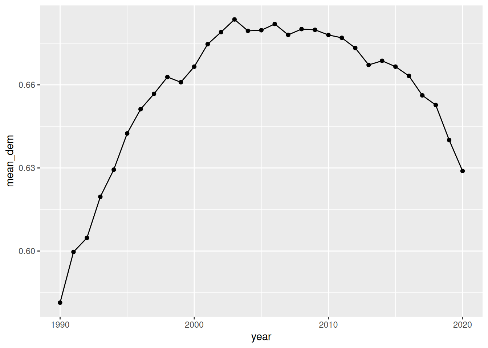
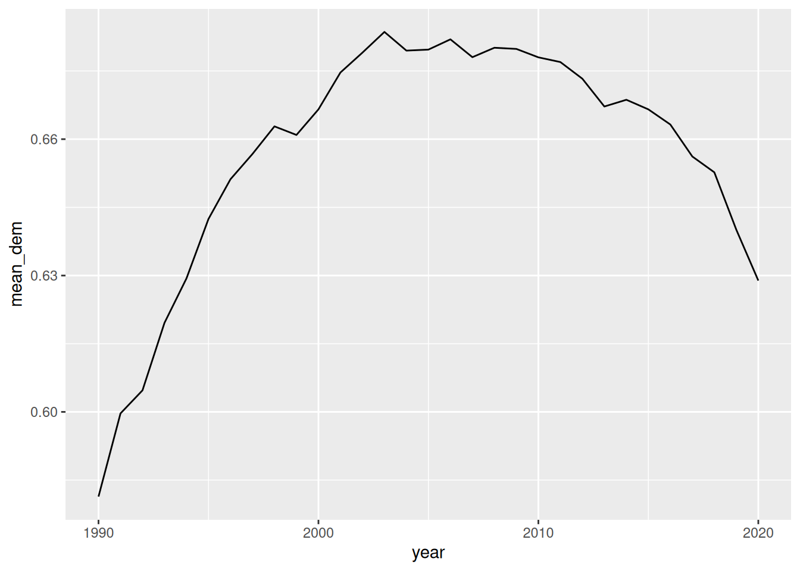
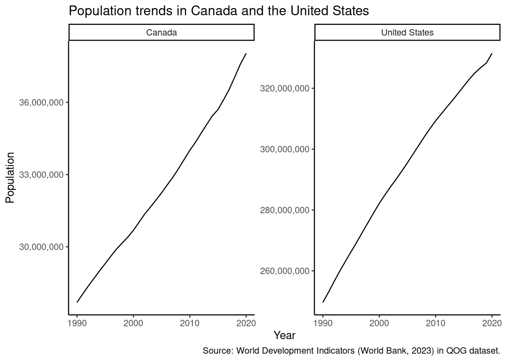

Notice how in the data/ folder we have multiple versions of the same dataset (a subset of the QOG basic dataset): .csv (comma-separated values), .rds (R), .xlsx (Excel), .dta (Stata), and .sav (SPSS).
5.1.1 CSV and R data files
We can use the read_csv() and read_rds() functions from the tidyverse1 to read the .csv and .rds (R) data files:
Rows: 1085 Columns: 8
── Column specification ────────────────────────────────────────────────────────
Delimiter: ","
chr (4): cname, ccodealp, region, ht_colonial
dbl (4): year, wdi_pop, vdem_polyarchy, vdem_corr
ℹ Use `spec()` to retrieve the full column specification for this data.
ℹ Specify the column types or set `show_col_types = FALSE` to quiet this message.
For reading files from other software (Excel, Stata, or SPSS), we need to load additional packages. Luckily, they are automatically installed when one installs the tidyverse.
5.1.2 Excel data files
For Excel files (.xls or .xlsx files), the readxl package has a handy read_excel() function.
Useful arguments of the read_excel() function include sheet =, which reads particular sheets (specified via their positions or sheet names), and range =, which extracts a particular cell range (e.g., `A5:E25`).
5.1.3 Stata and SPSS data files
To load files from Stata (.dta) or SPSS (.spss), one needs the haven package and its properly-named read_stata() and read_spss() functions:
Datasets from Stata and SPSS can have additional properties, like variable labels and special types of missing values. To learn more about this, check out the “Labelled data” chapter from Danny Smith’s Survey Research Datasets and R(2020).
5.1.4 Our data for this session
We will rename one of our objects to qog:
qog <- qog_csvqog
# A tibble: 1,085 × 8
cname ccodealp year region wdi_pop vdem_polyarchy vdem_corr ht_colonial
<chr> <chr> <dbl> <chr> <dbl> <dbl> <dbl> <chr>
1 Antigua a… ATG 1990 Carib… 63328 NA NA British
2 Antigua a… ATG 1991 Carib… 63634 NA NA British
3 Antigua a… ATG 1992 Carib… 64659 NA NA British
4 Antigua a… ATG 1993 Carib… 65834 NA NA British
5 Antigua a… ATG 1994 Carib… 67072 NA NA British
6 Antigua a… ATG 1995 Carib… 68398 NA NA British
7 Antigua a… ATG 1996 Carib… 69798 NA NA British
8 Antigua a… ATG 1997 Carib… 71218 NA NA British
9 Antigua a… ATG 1998 Carib… 72572 NA NA British
10 Antigua a… ATG 1999 Carib… 73821 NA NA British
# ℹ 1,075 more rows
This dataset is a small sample of QOG, which contains data for countries in the Americas from 1990 to 2020. The observational unit is thus country-year. You can access the full codebook online. The variables are as follows:
Variable
Description
cname
Country name
ccodealp
Country code (ISO-3 character convention)
year
Year
region
Region (following legacy WDI convention). Added to QOG by us.
wdi_pop
Total population, from the World Development Indicators
vdem_polyarchy
V-Dem’s polyarchy index (electoral democracy)
vdem_corr
V-Dem’s corruption index
ht_colonial
Former colonial ruler
5.2 Recoding variables
Take a look at the ht_colonial variable. We can do a simple tabulation with count():
qog |>count(ht_colonial)
# A tibble: 6 × 2
ht_colonial n
<chr> <int>
1 British 372
2 Dutch 31
3 French 31
4 Never colonized 62
5 Portuguese 31
6 Spanish 558
Tip
Another common way to compute quick tabulations in R is with the table() function. Be aware that this takes a vector as the input:
table(qog$ht_colonial)
British Dutch French Never colonized Portuguese
372 31 31 62 31
Spanish
558
We might want to recode this variable. For instance, we could create a dummy/binary variable for whether the country was a British colony. We can do this with if_else(), which works with logical conditions:
qog |># the arguments are condition, true (what to do if true), falsemutate(d_britishcol =if_else(ht_colonial =="British", 1, 0)) |>count(d_britishcol)
# A tibble: 2 × 2
d_britishcol n
<dbl> <int>
1 0 713
2 1 372
Instead of a numeric classification (0 and 1), we could use characters:
# A tibble: 2 × 2
cat_britishcol n
<chr> <int>
1 British 372
2 Other 713
if_else() is great for binary recoding. But sometimes we want to create more than two categories. We can use case_when():
qog |># syntax is condition ~ valuemutate(cat_col =case_when( ht_colonial =="British"~"British", ht_colonial =="Spanish"~"Spanish", .default ="Other"# what to do in all other cases )) |>count(cat_col)
# A tibble: 3 × 2
cat_col n
<chr> <int>
1 British 372
2 Other 155
3 Spanish 558
The .default = argument in case_when() can also be used to leave the variable as-is for non-specified cases. For example, let’s combine Portuguese and Spanish colonies:
qog |># syntax is condition ~ valuemutate(cat_col =case_when( ht_colonial %in%c("Spanish", "Portuguese") ~"Spanish/Portuguese",.default = ht_colonial # what to do in all other cases )) |>count(cat_col)
# A tibble: 5 × 2
cat_col n
<chr> <int>
1 British 372
2 Dutch 31
3 French 31
4 Never colonized 62
5 Spanish/Portuguese 589
Exercise
Create a dummy variable, d_large_pop, for whether the country-year has a population of more than 1 million. Then compute its mean. Your code:
Which countries are recorded as “Never colonized”? Change their values to other reasonable codings and compute a tabulation with count(). Your code:
5.3 Missing values
Missing values are commonplace in real datasets. In R, missing values are a special type of value in vectors, denoted as NA.
Warning
The special value NA is different from the character value “NA”. For example, notice that a numeric vector can have NAs, while it obviously cannot hold the character value “NA”:
c(5, 4.6, NA, 8)
[1] 5.0 4.6 NA 8.0
A quick way to check for missing values in small datasets is with the summary() function:
summary(qog)
cname ccodealp year region
Length:1085 Length:1085 Min. :1990 Length:1085
Class :character Class :character 1st Qu.:1997 Class :character
Mode :character Mode :character Median :2005 Mode :character
Mean :2005
3rd Qu.:2013
Max. :2020
wdi_pop vdem_polyarchy vdem_corr ht_colonial
Min. : 40542 Min. :0.0710 Min. :0.0260 Length:1085
1st Qu.: 389131 1st Qu.:0.5570 1st Qu.:0.1890 Class :character
Median : 5687744 Median :0.7030 Median :0.5550 Mode :character
Mean : 25004057 Mean :0.6569 Mean :0.4922
3rd Qu.: 16195902 3rd Qu.:0.8030 3rd Qu.:0.7540
Max. :331501080 Max. :0.9160 Max. :0.9630
NA's :248 NA's :248
Notice that we have missingness in the vdem_polyarchy and vdem_corr variables. We might want to filter the dataset to see which observations are in this situation:
qog |>filter(vdem_polyarchy ==NA| vdem_corr ==NA)
# A tibble: 0 × 8
# ℹ 8 variables: cname <chr>, ccodealp <chr>, year <dbl>, region <chr>,
# wdi_pop <dbl>, vdem_polyarchy <dbl>, vdem_corr <dbl>, ht_colonial <chr>
But the code above doesn’t work! To refer to missing values in logical conditions, we cannot use == NA. Instead, we need to use the is.na() function:
# A tibble: 248 × 8
cname ccodealp year region wdi_pop vdem_polyarchy vdem_corr ht_colonial
<chr> <chr> <dbl> <chr> <dbl> <dbl> <dbl> <chr>
1 Antigua a… ATG 1990 Carib… 63328 NA NA British
2 Antigua a… ATG 1991 Carib… 63634 NA NA British
3 Antigua a… ATG 1992 Carib… 64659 NA NA British
4 Antigua a… ATG 1993 Carib… 65834 NA NA British
5 Antigua a… ATG 1994 Carib… 67072 NA NA British
6 Antigua a… ATG 1995 Carib… 68398 NA NA British
7 Antigua a… ATG 1996 Carib… 69798 NA NA British
8 Antigua a… ATG 1997 Carib… 71218 NA NA British
9 Antigua a… ATG 1998 Carib… 72572 NA NA British
10 Antigua a… ATG 1999 Carib… 73821 NA NA British
# ℹ 238 more rows
Notice that, in most R functions, missing values are “contagious.” This means that any missing value will contaminate the operation and carry over to the results. For example:
Sometimes we’d like to perform our operations even in the presence of missing values, simply excluding them. Most basic R functions have an na.rm = argument to do this:
# A tibble: 1 × 1
mean_vdem_polyarchy
<dbl>
1 0.657
Exercise
Calculate the median value of the corruption variable for each region (i.e., perform a grouped summary). Your code:
5.4 Pivoting data
We will now load another time-series cross-sectional dataset, but in a slightly different format. It’s adapted from the World Bank’s World Development Indicators (WDI) (2023) and records gross domestic product at purchasing power parity (GDP PPP).
gdp <-read_excel("data/wdi_gdp_ppp.xlsx")
gdp
# A tibble: 266 × 35
country_name country_code `1990` `1991` `1992` `1993` `1994`
<chr> <chr> <dbl> <dbl> <dbl> <dbl> <dbl>
1 Aruba ABW 2.03e 9 2.19e 9 2.32e 9 2.48e 9 2.69e 9
2 Africa Eastern and… AFE 9.41e11 9.42e11 9.23e11 9.19e11 9.35e11
3 Afghanistan AFG NA NA NA NA NA
4 Africa Western and… AFW 5.76e11 5.84e11 5.98e11 5.92e11 5.91e11
5 Angola AGO 6.85e10 6.92e10 6.52e10 4.95e10 5.02e10
6 Albania ALB 1.59e10 1.14e10 1.06e10 1.16e10 1.26e10
7 Andorra AND NA NA NA NA NA
8 Arab World ARB 2.19e12 2.25e12 2.35e12 2.41e12 2.48e12
9 United Arab Emirat… ARE 2.01e11 2.03e11 2.10e11 2.12e11 2.27e11
10 Argentina ARG 4.61e11 5.04e11 5.43e11 5.88e11 6.22e11
# ℹ 256 more rows
# ℹ 28 more variables: `1995` <dbl>, `1996` <dbl>, `1997` <dbl>, `1998` <dbl>,
# `1999` <dbl>, `2000` <dbl>, `2001` <dbl>, `2002` <dbl>, `2003` <dbl>,
# `2004` <dbl>, `2005` <dbl>, `2006` <dbl>, `2007` <dbl>, `2008` <dbl>,
# `2009` <dbl>, `2010` <dbl>, `2011` <dbl>, `2012` <dbl>, `2013` <dbl>,
# `2014` <dbl>, `2015` <dbl>, `2016` <dbl>, `2017` <dbl>, `2018` <dbl>,
# `2019` <dbl>, `2020` <dbl>, `2021` <dbl>, `2022` <dbl>
Note how the information is recorded differently. Here columns are not variables, but years. We call datasets like this one wide, in contrast to the long datasets we have seen before. In general, R and the tidyverse work much nicer with long datasets. Luckily, the tidyr package of the tidyverse makes it easy to convert datasets between these two formats.
gdp_long <- gdp |>pivot_longer(cols =-c(country_name, country_code), # cols to not pivotnames_to ="year", # how to name the column with namesvalues_to ="wdi_gdp_ppp", # how to name the column with valuesnames_transform = as.integer) # make sure that years are numericgdp_long
# A tibble: 266 × 2
country_name mean_gdp_ppp
<chr> <dbl>
1 Aruba 3.38e 9
2 Africa Eastern and Southern 1.61e12
3 Afghanistan 5.56e10
4 Africa Western and Central 1.15e12
5 Angola 1.38e11
6 Albania 2.56e10
7 Andorra NaN
8 Arab World 4.22e12
9 United Arab Emirates 4.29e11
10 Argentina 8.06e11
# ℹ 256 more rows
Exercise
Convert back gdp_long to a wide format using pivot_wider(). Check out the help file using ?pivot_wider. Your code:
5.5 Merging datasets
It is extremely common to want to integrate data from multiple sources. Combining information from two datasets is called merging or joining.
To do this, we need ID variables in common between the two data sets. Using our QOG and WDI datasets, these variables will be country code (which in this case is shared between the two datasets) and year.
Tip
Standardized unit codes (like country codes) are extremely useful when merging data. It’s harder than expected for a computer to realize that “Bolivia (Plurinational State of)” and “Bolivia” refer to the same unit. By default, these units will not be matched.2
Okay, now to the merging. Imagine we want to add information about GDP to our QOG main dataset. To do so, we can use the left_join() function, from the tidyverse’s dplyr package:
qog_plus <-left_join(qog, # left data frame, which serves as a "base" gdp_long, # right data frame, from which to draw new columnsby =c("ccodealp"="country_code", # can define name equivalencies!"year"))
qog_plus |># select variables for clarityselect(cname, ccodealp, year, wdi_pop, wdi_gdp_ppp)
# A tibble: 1,085 × 5
cname ccodealp year wdi_pop wdi_gdp_ppp
<chr> <chr> <dbl> <dbl> <dbl>
1 Antigua and Barbuda ATG 1990 63328 966660878.
2 Antigua and Barbuda ATG 1991 63634 987701012.
3 Antigua and Barbuda ATG 1992 64659 999143284.
4 Antigua and Barbuda ATG 1993 65834 1051896837.
5 Antigua and Barbuda ATG 1994 67072 1122128908.
6 Antigua and Barbuda ATG 1995 68398 1073208718.
7 Antigua and Barbuda ATG 1996 69798 1144088355.
8 Antigua and Barbuda ATG 1997 71218 1206688391.
9 Antigua and Barbuda ATG 1998 72572 1263778328.
10 Antigua and Barbuda ATG 1999 73821 1310634399.
# ℹ 1,075 more rows
Tip
Most of the time, you’ll want to do a left_join(), which is great for adding new information to a “base” dataset, without dropping information from the latter. In limited situations, other types of joins can be helpful. To learn more about them, you can read Jenny Bryan’s excellent tutorial on dplyr joins.
Exercise
There is a dataset on country’s CO2 emissions, again from the World Bank (2023), in “data/wdi_co2.csv”. Load the dataset into R and add a new variable with its information, wdi_co2, to our qog_plus data frame. Finally, compute the average values of CO2 emissions per capita, by country. Tip: this exercise requires you to do many steps—plan ahead before you start coding! Your code:
5.5.1 Sanity checks
Sanity checks are small tests to make sure that your code is doing what you think it’s doing. They are especially important in complex operations like joins, but the idea can be extended to pretty much any command.
The tidylog package gives more information about tidyverse operations, and it’s an easy/automatic way to check your work:
library(tidylog)
qog_plus <-left_join(qog, # left data frame, which serves as a "base" gdp_long, # right data frame, from which to draw new columnsby =c("ccodealp"="country_code", # can define name equivalencies!"year"))
left_join: added 2 columns (country_name, wdi_gdp_ppp)
> rows only in qog 0
> rows only in gdp_long (7,693)
> matched rows 1,085
> =======
> rows total 1,085
You can also construct sanity checks manually. For instance, we know that a left join shouldn’t modify a data frame’s number of rows:
nrow(qog) ==nrow(qog_plus)
[1] TRUE
5.6 Plotting extensions: trend graphs, facets, and customization
Exercise
Draw a scatterplot with time in the x-axis and democracy scores in the y-axis. Your code:
How can we visualize trends effectively? One alternative is to use a trend graph. Let’s start by computing the yearly averages for democracy in the whole region:
ggplot(dem_yearly, aes(x = year, y = mean_dem)) +geom_point()
We can add geom_line() to connect the dots:
ggplot(dem_yearly, aes(x = year, y = mean_dem)) +geom_point() +geom_line()

We can, of course, remove to points to only keep the line:
ggplot(dem_yearly, aes(x = year, y = mean_dem)) +geom_line()

What if we want to plot trends for different countries? We can use the group and color aesthetic mappings (no need to do a summary here! data is already at the country-year level):
# filter to only get Colombia and Venezueladem_yearly_countries <- qog |>filter(ccodealp %in%c("COL", "VEN"))
ggplot(dem_yearly_countries, aes(x = year, y = vdem_polyarchy, color = cname)) +geom_line()
Remember that we can use the labs() function to add labels:
ggplot(dem_yearly_countries, aes(x = year, y = vdem_polyarchy, color = cname)) +geom_line() +labs(x ="Year", y ="V-Dem Electoral Democracy Score", color ="Country", title ="Evolution of democracy scores in Colombia and Venezuela",caption ="Source: V-Dem (Coppedge et al., 2022) in QOG dataset.")
Another way to display these trends is by using facets, which divide a plot into small boxes according to a categorical variable (no need to add color here):
ggplot(dem_yearly_countries, aes(x = year, y = vdem_polyarchy)) +geom_line() +facet_wrap(~cname)
Facets are particularly useful for many categories (where the number of distinguishable colors reaches its limit):
With facets, one can control whether each facet picks its own scales or if all facets share the same scale. For example, let’s plot the populations of Canada and the US:
The scales are so disparate that unifying them yields a plot that’s hard to interpret. But if we’re interested in within-country trends, we can let each facet have its own scale with the scales = argument (which can be “fixed”, “free_x”, “free_y”, or “free”):
This ability to visualize within time trends also makes facets appealing in many situations.
Tip
Plots made with ggplot2 are extremely customizable. For example, we could want to change the y-axis labels in the last plot to something more readable:
# create as object "p" to use laterp <-ggplot(qog |>filter(cname %in%c("Canada", "United States")), aes(x = year, y = wdi_pop)) +geom_line() +facet_wrap(~cname, scales ="free_y") +scale_y_continuous(labels = scales::label_number(big.mark =",")) +# also add labelslabs(x ="Year", y ="Population",title ="Population trends in Canada and the United States",caption ="Source: World Development Indicators (World Bank, 2023) in QOG dataset.")
While it’s impossible for us to review all the customization options you might need, a fantastic reference is the “ggplot2: Elegant Graphics for Data Analysis” book by Hadley Wickham, Danielle Navarro, and Thomas Lin Pedersen.
Exercise
Using your merged dataset from the previous section, plot the trajectories of C02 per capita emissions for the US and Haiti. Use adequate scales.
5.6.1 Themes
We can change the overall aspect of a ggplot2 figure by changing its theme:
p +theme_minimal()
p +theme_classic()

p +theme_bw()
If you are going to make multiple plots in a script, you can set the theme at the beginning with theme_bw():
theme_set(theme_bw())p
Arel-Bundock, Vincent, Nils Enevoldsen, and CJ Yetman. 2018. “Countrycode: An r Package to Convert Country Names and Country Codes.”Journal of Open Source Software 3 (28): 848. https://doi.org/10.21105/joss.00848.
Aronow, Peter M, and Benjamin T Miller. 2019. Foundations of Agnostic Statistics. Cambridge University Press.
Baydin, Atılım Günes, Barak A. Pearlmutter, Alexey Andreyevich Radul, and Jeffrey Mark Siskind. 2017. “Automatic Differentiation in Machine Learning: A Survey.”The Journal of Machine Learning Research 18 (1): 5595–5637.
Coppedge, Michael, John Gerring, Carl Henrik Knutsen, Staffan I. Lindberg, Jan Teorell, David Altman, Michael Bernhard, et al. 2022. “V-Dem Codebook V12.”Varieties of Democracy (V-Dem) Project. https://www.v-dem.net/dsarchive.html.
Dahlberg, Stefan, Aksen Sundström, Sören Holmberg, Bo Rothstein, Natalia Alvarado Pachon, Cem Mert Dalli, and Yente Meijers. 2023. “The Quality of Government Basic Dataset, Version Jan23.” University of Gothenburg: The Quality of Government Institute. https://www.gu.se/en/quality-government doi:10.18157/qogbasjan23.
U. S. Department of Agriculture [USDA], Agricultural Research Service. 2019. “Department of Agriculture Agricultural Research Service.”https://fdc.nal.usda.gov/.
Whittinghill, Dexter C, and Robert V Hogg. 2001. “A Little Uniform Density with Big Instructional Potential.”Journal of Statistics Education 9 (2).
Wickham, Hadley, Danielle Navarro, and Thomas Lin Pedersen. 2023. Ggplot2: ElegantGraphics for DataAnalysis. 3rd ed. https://ggplot2-book.org/.
Technically, the read_csv() and read_rds() functions come from readr, one of the tidyverse constituent packages.↩︎
There are R packages to deal with these complications. fuzzyjoin matches units by their approximate distance, using some clever algorithms. countrycode allows one to standardize country names and country codes across different conventions.↩︎